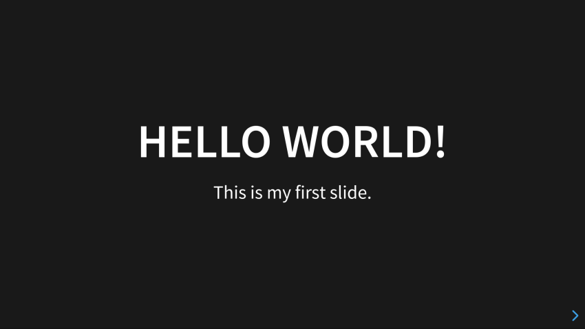
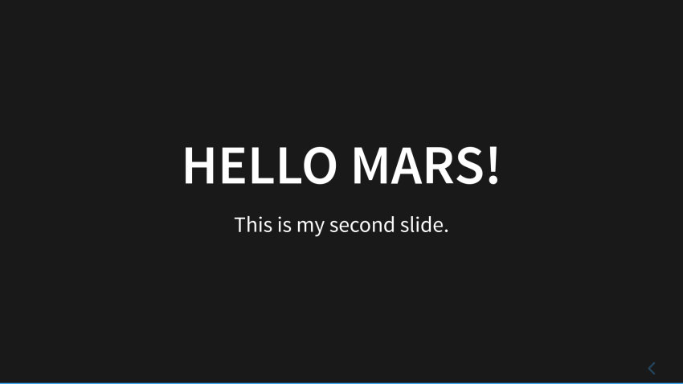
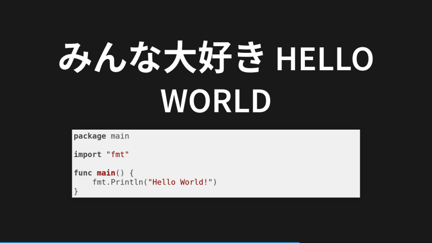
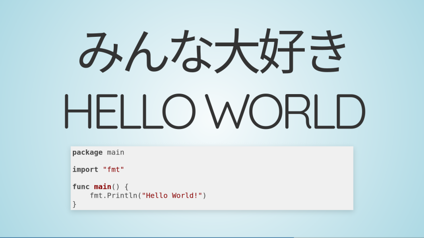
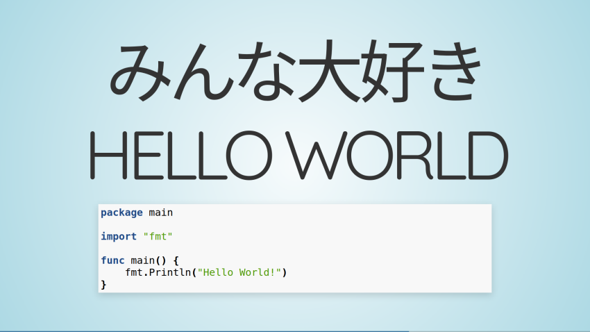
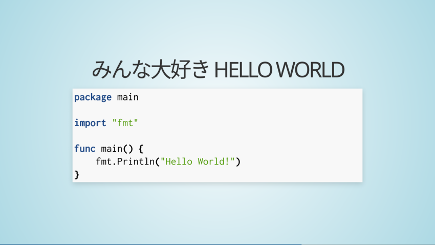

Hugo でスライド・サイトを立てる実験

来月のイベント用に資料をスライド形式で作ろうと思うのだが， MS Office は大昔に捨ててしまったし LibreOffice の Impress で書くというのも今更だしなぁ。
できれば markdown で書いて VCS でドキュメント管理したい。
で，ちょろんとググってみたら reveal-hugo なる Hugo テーマがあって，内部では reveal.js を使ってスライドを制御しているらしい。 これだよ，これ。
Hugo は静的サイト・ジェネレータなのでデプロイ先の自由度が高い。 さくらのレンタルサーバみたいな老舗でも GitHub Page や最近流行り（？）の Netlify でも大丈夫。 しかも Hugo にはサーバ・モードがあるのでローカル環境で試すこともできる。
Reveal.js テーマを自作するのでなければ通常版の Hugo で問題ない。 また reveal-hugo には reveal.js 一式がまるっと含まれているので別途のインストールは不要。 Node.js をインストールする必要もない。 簡単！
では，さっそく試してみよう。
Hugo 環境の構築
まずは適当なディレクトリで Hugo 環境を作成する。
$ hugo new site hugo-slide
Congratulations! Your new Hugo site is created in /home/username/hugo-env/hugo-slide.
Just a few more steps and you're ready to go:
1. Download a theme into the same-named folder.
Choose a theme from https://themes.gohugo.io/ or
create your own with the "hugo new theme <THEMENAME>" command.
2. Perhaps you want to add some content. You can add single files
with "hugo new <SECTIONNAME>/<FILENAME>.<FORMAT>".
3. Start the built-in live server via "hugo server".
Visit https://gohugo.io/ for quickstart guide and full documentation.
これで hugo-slide ディレクトリが作成される。
このディレクトリに入り git リポジトリとして初期化する。
$ cd hugo-slide
$ git init
この時点でコミットしておけばいつでも元に戻せるので安心である。
次に reveal-hugo を git のサブモジュールとして導入する。
$ git submodule add git@github.com:dzello/reveal-hugo.git themes/reveal-hugo
Cloning into '/home/username/hugo-env/hugo-slide/themes/reveal-hugo'...
remote: Enumerating objects: 1713, done.
remote: Total 1713 (delta 0), reused 0 (delta 0), pack-reused 1713
Receiving objects: 100% (1713/1713), 6.61 MiB | 1.83 MiB/s, done.
Resolving deltas: 100% (848/848), done.
マジ簡単。 Reveal-hugo をアップデートする場合は
$ git submodule update --init
でよい。 以降 reveal-hugo の中身は弄らない方針で作業を進める。
config.toml の設定
Hugo 環境作成直後の config.toml の中身はこんな感じになっている。
baseURL = "http://example.org/"
languageCode = "en-us"
title = "My New Hugo Site"
これを以下のように書き換える。
baseURL = "http://example.org/"
languageCode = "ja_JP"
title = "スライド用デモ・サイト"
theme = "reveal-hugo"
[outputFormats.Reveal]
baseName = "index"
mediaType = "text/html"
isHTML = true
[markup.goldmark.renderer]
unsafe = true
[markup.highlight]
codeFences = false
Hugo で作成したサイトをデプロイするなら baseURL にデプロイ先の URL を設定する。
[outputFormats.Reveal] 項目は reveal.js 用の出力設定で，取り敢えずおまじないのようなものだと思っておけばよい。
最後の4行は Hugo 0.60 以降では必須の設定である。 これも取り敢えずおまじないとして唱えておく（笑）
スライド用のドキュメントを作成・表示する
hugo-slide/content ディレクトリに _index.md ファイルを作成する。
お試しなので，中身はこんな感じ。
+++
title = "Hello world!"
outputs = ["Reveal"]
+++
# Hello world!
This is my first slide.
---
# Hello Mars!
This is my second slide.
これで2ページ分のスライドができた。
早速 Hugo をサーバモードで起動して表示してみよう。
$ hugo server
この状態でブラウザで http://localhost:1313/ にアクセスすれば
{kind=link}

おおっ，できたできた。
ちなみに [F] キー押下で全画面表示になる（元に戻すには [ESC] キー押下）。
[Page Down] キーを押すか右下の > をクリックすれば次ページに遷移する。
{kind=link}

よーし，うむうむ，よーし。
セクションでスライドを分ける
来月のイベントは技術系なのでコードも書けるようにしておきたい。
では hugo-slide/content ディレクトリに hello ディレクトリを切ってその中に _index.md ファイルを作成してみよう。
中身はこんな感じ。
+++
title = "みんな大好き Hello World"
outputs = ["Reveal"]
+++
# みんな大好き Hello World
```go
package main
import "fmt"
func main() {
fmt.Println("Hello World!")
}
```これで http://localhost:1313/hello/ にアクセスすれば
{kind=link}

と表示される。 このようにディレクトリを切ってセクション毎に分けることで複数のスライドを置くことができる。
ただし Hugo はセクションの階層化はできない。 更にいうと reveal-hugo ではひとつのセクションに複数の原稿ファイルをおいてもひとつのスライドにまとめられてしまうようだ。 ご注意を。
さて，次は見た目をちょっと弄ってみようか。
スライドテーマの指定
Reveal-hugo ではサイト単位，あるいは front matter 単位で reveal.js テーマを指定できる。
config.toml でサイト単位で指定する場合は
[params.reveal_hugo]
theme = "sky"
という感じに， front matter で指定するなら
[reveal_hugo]
theme = "sky"
てな感じに指定できる。
Reveal.js が用意しているテーマには以下のものがある。
| Name | Description |
|---|---|
black |
Black background, white text, blue links (default theme) |
white |
White background, black text, blue links |
league |
Gray background, white text, blue links (default theme for reveal.js < 3.0.0) |
beige |
Beige background, dark text, brown links |
sky |
Blue background, thin dark text, blue links |
night |
Black background, thick white text, orange links |
serif |
Cappuccino background, gray text, brown links |
simple |
White background, black text, blue links |
solarized |
Cream-colored background, dark green text, blue links |
ちなみに sky だとこんな感じ。
{kind=link}

更に reveal-hugo ではカスタム・テーマとして robot-lung と sunblind が用意されている。
カスタム・テーマは
[params.reveal_hugo]
custom_theme = "reveal-hugo/themes/robot-lung.css"
という感じに指定できる。 もちろん自作のテーマを組み込むことも可能である。
Syntax Highlight の指定
コード部分の Syntax Highlight には highlight.js が使われている。 Highlight.js は reveal.js のプラグインとして既定で組み込まれている。
Highlight.js のスタイルは
[params.reveal_hugo]
highlight_theme = "github"
てな感じで指定できる。 highlight.js で指定可能なスタイルはデモ・ページで確認できる。
Hugo の Syntax Highlight を使う
ところで Hugo は自前で Syntax Highlight の機能を持っている。 これを使わない手はない。
まず highlight.js プラグインを無効にするのだが，個別にプラグインを無効化する方法がないため，config.toml で
[params.reveal_hugo]
load_default_plugins = false
plugins = [
"reveal-js/plugin/zoom-js/zoom.js",
"reveal-js/plugin/notes/notes.js",
]
という感じに，いったん既定のプラグインを全て無効にしてから必要なものを個別に組み込む。
Hugo 側の Syntax Highlight の設定は
[markup.highlight]
codeFences = true
hl_Lines = ""
lineNoStart = 1
lineNos = false
lineNumbersInTable = true
noClasses = true
style = "tango"
tabWidth = 4
などとすればよいだろう。
codeFences が true になっている点に注意。
style のサンプルは以下を参考にどうぞ。
たとえば tango スタイルを使えば
{kind=link}

てな感じになる。
Web フォントを使いたい！
Web で公開することを考えるのなら Web フォントを使いたいところである。 それにタイトルがちょいとデカすぎるしコードは小さすぎるよね。
Reveal-hugo では layouts/partials/reveal-hugo/head.html を使ってページの <head> 要素に任意の記述を割り込ませることができる。
これを使ってフォントの調整をしよう。
たとえばこんな記述を割り込ませてみる。
<link rel='stylesheet' href='//fonts.googleapis.com/css?family=Noto+Sans%7cNoto+Sans+JP%3a400,700%7cInconsolata%3a400,700' type='text/css'>
<link rel='stylesheet' href='/css/font-family.css' type='text/css'>
ちなみに font-family.css はこんな内容にしてみた1。
.reveal {
font-family: 'Noto Sans', 'Noto Sans JP', sans-serif;
}
.reveal h1,
.reveal h2,
.reveal h3,
.reveal h4,
.reveal h5,
.reveal h6 {
font-family: 'Noto Sans', 'Noto Sans JP', sans-serif;
}
.reveal code {
font-family: 'Inconsolata', 'Noto Sans JP', monospace;
}
.reveal h1 {
font-size: 1.6em;
}
.reveal h2 {
font-size: 1.3em;
}
.reveal h3 {
font-size: 1em;
}
.reveal h4 {
font-size: 1em;
}
.reveal pre {
font-size: 0.8em;
}
これで実際の表示は
{kind=link}

てな感じになった。 こんなもんかな。
Reveal-hugo では他にも fragment など reveal.js のギミックが利用可能だが，今回は割愛する。
ブックマーク
-
font-family.cssファイルはstatic/css/ディレクトリに置くこと。 ↩︎